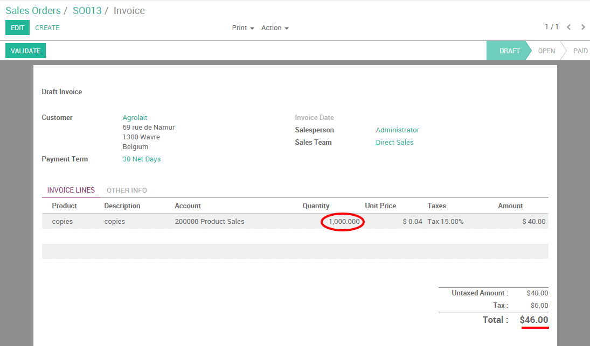
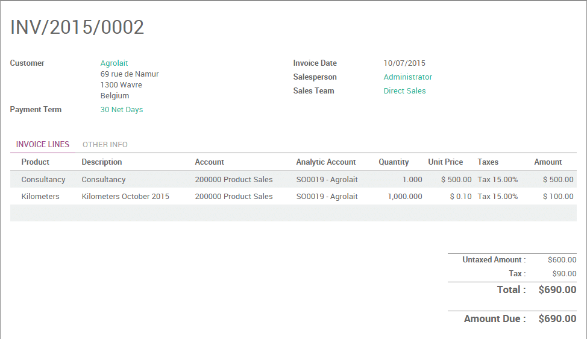

It often happens that your employees have to spend their personal money while working on a project for your client. Let's take the example of an employee paying a parking spot for a meeting with your client. As a company, you would like to be able to invoice that expense to your client.
In this documentation we will see two use cases. The first, very basic, consists of invoicing a simple expense to your client like you would do for a product. The second, more advanced, will consist of invoicing expenses entered in your expense system by your employees directly to your customer.
Use case 1: Simple expense invoicing
Let's take the following example. You are working on a promotion
campaign for one of your customers (Agrolait) and you have to print a
lot of copies. Those copies are an expense for your company and you
would like to invoice them.
Configuration
In order to sell services and to send invoices, you need to install the Sales application, from the Apps icon.

Create product to be expensed
You will need now to create a product called Copies.
From your Sales module, go to and create a product as follows:
- Product type: consumable
- Invoicing policy: on delivered quantities (you will manually set the quantities to invoice on the sale order)

Create a sale order
Now that your product is correctly set up, you can create a sale order for that product (from the menu ) with the ordered quantities set to 0. Click on Confirm the Sale to create the sale order. You will be able then to manually change the delivered quantities on the sale order to reinvoice the copies to your customer.

Invoice expense to your client
At the end of the month, you have printed 1000 copies on behalf of your
client and you want to re-invoice them. From the related sale order,
click on Delivered Quantities, manually enter the correct amount of
copies and click on Save. Your order line will turn blue, meaning that
it is ready to be invoiced. Click on Create invoice.
Note
The total amount on your sale order will be of 0 as it is computed on the ordered quantities. It is your invoice which will compute the correct amount due by your customer.
The invoice generated is in draft, so you can always control the quantities and change the amount if needed. You will notice that the amount to be invoiced is based here on the delivered quantities.
Click on validate to issue the payment to your customer.
Use case 2: Invoice expenses via the expense module
To illustrate this case, let's imagine that your company sells some
consultancy service to your customer Agrolait and both parties agreed
that the distance covered by your consultant will be re-invoiced at
cost.
Configuration
Here, you will need to install two more modules:
- Expense Tracker
- Accounting, where you will need to activate the analytic accounting from the settings
Create a product to be expensed
You will now need to create a product called Kilometers.
From your Sales module, go to and create a product as follows:
- Product can be expensed
- Product type: Service
- Invoicing policy: invoice based on time and material
- Expense invoicing policy: At cost
- Track service: manually set quantities on order

Create a sales order
Still from the Sales module, go to and add your product Consultancy on the order line.
Tip
If your product doesn't exist yet, you can configure it on the fly from the SO. Just type the name on the product field and click on Create and edit to configure it.
Depending on your product configuration, an Analytic Account may have been generated automatically. If not, you can easily create one in order to link your expenses to the sale order. Do not forget to confirm the sale order.

Note
Refer to the documentation Analytic account use cases to learn more about that concept.
Create expense and link it to SO
Let's assume that your consultant covered 1.000km in October as part
of his consultancy project. We will create a expense for it and link
it to the related sales order thanks to the analytic account.
Go to the Expenses module and click on Create. Record your expense as follows:
- Expense description: Kilometers October 2015
- Product: Kilometers
- Quantity: 1.000
- Analytic account: SO0019 - Agrolait
Click on Submit to manager. As soon as the expense has been validated and posted to the journal entries, a new line corresponding to the expense will automatically be generated on the sale order.
Invoice expense to your client
You can now invoice the invoiceable lines to your customer.
